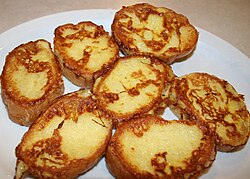

French Toast

Description
French toast is a dish of sliced bread soaked in beaten
eggs and often milk or cream, then pan-fried.
Ingredients
- Bread
- Eggs
- Milk
- Sugar
- Cinnamon
- Vanilla extract
- Butter
- Pinch of salt
Steps
- Crack the eggs into a bowl.
- Add milk, sugar, cinnamon, vanilla extract,
and a pinch of salt.
- Whisk everything together until well combined.
- Heat a pan over medium heat and add some butter.
- Dip a slice of bread into the egg mixture, coating
both sides. Don't soak it for too long unless the
bread is thick.
- Place the bread in the hot pan.
- Cook until the bottom is golden brown, about 2-3
minutes.
- Flip and cook the other side until golden brown.
- Repeat with the remaining bread, adding more butter
when needed.
- Serve hot with honey, maple syrup, powdered sugar,
fruit, or whatever you like.
Home